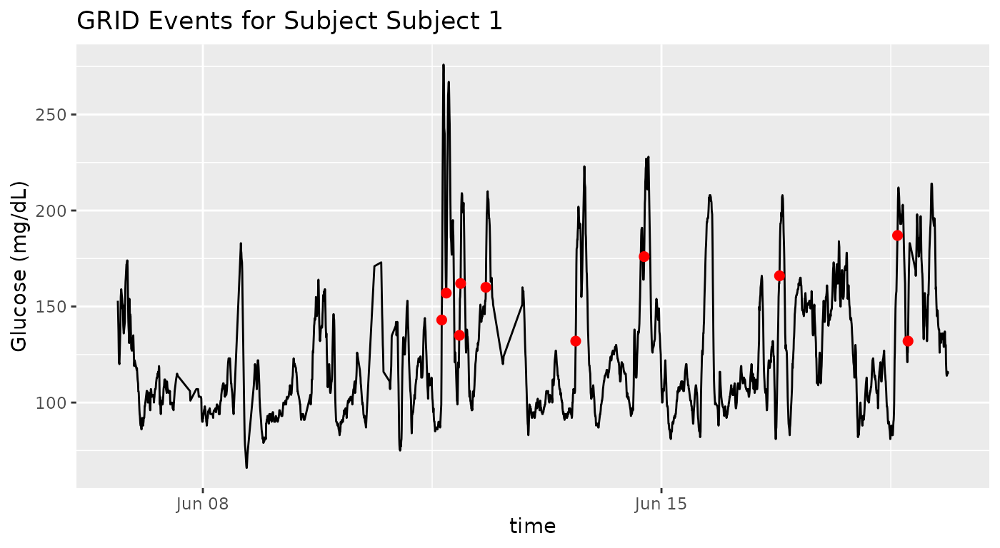

Introduction
The GRID (Glucose Rate Increase Detector) algorithm is designed to automatically detect rapid increases in continuous glucose monitoring (CGM) data. This is frequently used for meal detection and evaluating time periods of significant glucose change.
This vignette demonstrates how to use the grid function
from the cgmguru package with real CGM data examples.
grid() operates on the timestamps and glucose values
supplied in df. It does not automatically call
interpolate_cgm() and does not use the full-day event
preprocessing grid unless you explicitly pass interpolated data to
grid().
Example Data
The iglu package provides example multi-subject and
single-subject datasets that we use here.
Basic GRID Analysis
We’ll run the GRID algorithm on a 5-subject CGM dataset, using
default parameter values (gap = 15 minutes,
threshold = 130 mg/dL/h).
grid_result <- grid(example_data_5_subject, gap = 15, threshold = 130)
# View the number of GRID events detected per subject
print(grid_result$episode_counts)
#> # A tibble: 5 × 2
#> id episode_counts
#> <chr> <int>
#> 1 Subject 1 10
#> 2 Subject 2 22
#> 3 Subject 3 7
#> 4 Subject 4 18
#> 5 Subject 5 42
# View the start points of GRID events
print(head(grid_result$episode_start))
#> # A tibble: 6 × 4
#> id time gl index
#> <chr> <dttm> <dbl> <int>
#> 1 Subject 1 2015-06-11 15:30:07 143 966
#> 2 Subject 1 2015-06-11 17:10:07 157 985
#> 3 Subject 1 2015-06-11 22:00:06 135 1038
#> 4 Subject 1 2015-06-11 22:25:06 162 1043
#> 5 Subject 1 2015-06-12 07:40:04 160 1154
#> 6 Subject 1 2015-06-13 16:34:59 132 1415
# See the identified points in the time series
grid_points <- head(grid_result$grid_vector)
print(grid_points)
#> # A tibble: 6 × 1
#> grid
#> <int>
#> 1 0
#> 2 0
#> 3 0
#> 4 0
#> 5 0
#> 6 0Parameter Sensitivity
You can adjust the gap and threshold for
more or less sensitive detection. For example, lowering the threshold
detects less pronounced glucose rises.
Plotting GRID Events Over Time
Here is how you might visualize GRID event starts against glucose time series for one subject:
library(ggplot2)
subid <- example_data_5_subject$id[1]
subdata <- example_data_5_subject[example_data_5_subject$id == subid, ]
substarts <- grid_result$episode_start[grid_result$episode_start$id == subid, ]
plot <- ggplot(subdata, aes(x = time, y = gl)) +
geom_line() +
geom_point(data = substarts, aes(x = time, y = gl), color = 'red', size = 2) +
labs(title = paste("GRID Events for Subject", subid), y = "Glucose (mg/dL)")
plot
Conclusion
The GRID function automates the detection of rapid glycemic events in CGM data, supporting clinical research and personalized diabetes care.
For further exploration, see function reference or try out other
algorithms and parameters in cgmguru.
How to Open this Vignette in RStudio
You can open this vignette in the RStudio Help tab at any time with the following command:
browseVignettes("cgmguru")This command will list all vignettes for the cgmguru
package; click on “grid” to view this vignette in the Help panel.